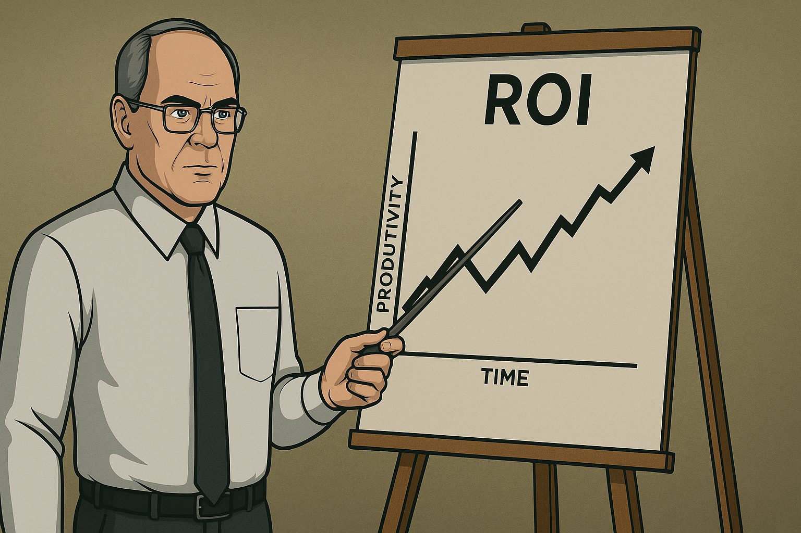

The Economics of AI Agents
It may or may not be common knowledge that I have a background in accounting. In a former life I was responsible for running the accounting function of my workplace including taxation, financial reporting, chart of accounts, etc. I loved the accounting and the maths but not so much the job itself which is how I found myself returning to university in my late twenties to study software engineering. I’ve always thought this background gives me a slightly different perspective on software engineering as it relates to business. I consider the return on investment (ROI) of every line of code written (even every comment). There needs to be value to the business in what we do otherwise it’s just waste. Don’t get me wrong, I’m an engineer through and through but it’s the business that keeps the lights on and ultimately we are bound to that bottom line whether we like it or not.
Coming back from a conference recently (ETLS - I highly recommend it) I’ve been thinking about AI Agents and how they might be deployed to get to that technical debt we never seem to get to clearing or those bugs we never seem to get to fixing. I had this vision of agents running in the background clearing technical debt, refactoring logic to be more secure, more readable, more efficient. It was a really nice vision while it lasted but then my accounting brain kicked in.
Agents are not limitless nor are they free. Quite the opposite at the moment in fact. Run Claude Code for a while on anything bigger than a hello world app and you’ll soon be topping up your account with some frequency. In the business sense, agents are no different really to their human counterparts. They provide value for an associated cost although (at least at the moment) humans are mostly a fixed cost with variable productivity while an agent cost is more tightly related to its productivity. Put another way an idle agent costs nothing where an idle human does not.
One of the reasons businesses often struggle with technical debt and bugs is that they build software that is just good enough to keep customers on board rather than building software to be the best it can be. This is often at odds with the engineering mindset where we strive for zero bugs and no technical debt. This is not unique to software, it applies to physical engineering also where items are engineered to have a useful life before becoming obsolete and in need of replacement. We could build physical things (cars, phones, etc) to last a lot longer but that’s not good business. A car that lasts forever, or a phone that never dies means that customer is a one off and businesses need to constantly seek new customers. This is a poor business model. Better to build something with a predictable lifespan that requires the customer to come back and buy another, but only after a usable lifespan that is satisfactory given the cost. There are exceptions of course where risk outweighs reward. Would you board a plane that was just good enough? (I’m looking at you Boeing)
I think we can assume that agents will be driven by the same economic model as is applied to us humans. We can expect that agents will be subject to the equivalent of headcount limits, cost reduction and ROI that we are. It is unlikely that agents will be used for cleanup work any more than their human counterparts. My expectation is that software built by agents will be more or less the same as the software we build today in terms of technical debt and bugs. The only difference is whether it makes more economic sense to use humans or agents for a given task. That will come down to cost. The cheapest and/or fastest path to market still applies regardless of who or what is doing the typing.

There is a little hope though. Agents promise the ability to do more in less time but, theoretically, there is a ceiling of change that end users can tolerate and adapt to. If your favourite website looked different every time you opened it you would soon get tired of it and just wish they’d leave it alone. In that world, the differentiating factor may well be higher resiliency and quality of the app over its competitors, in which case, the economics of deploying those fixer agents becomes viable.
I think the main thing to note is that, regardless of the explosion of technology currently going on around us, the economic forces that decide what gets done by whom have not changed. Those forces are still the same simple maths that has driven the industrial revolution, the computer age, the internet and now AI. That ever present bottom line is still what makes the world go round.